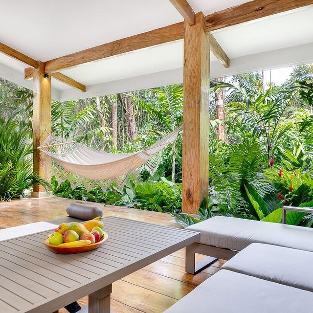

Rainforest Resorts · Sponsored
Winter, your way
Costa Rica with your group.

Costa Rica with your group.
The grey bars represent a response area, not a ChatGPT recommendation. Ads remain separate from responses. Layout adapted by STRATEGIA from the Help Center example.
Costa Rica with your group.
Responsive interpretation of the same reference. Actual mobile rendering may differ.
The compact study shows the first image. These additional images remain part of the proposed multi-image creative. The cited Help Center example demonstrates one thumbnail; it does not establish a multi-image layout. Exact multi-image presentation and account eligibility remain to be verified.



OpenAI: new visual ad format and measurement · 5 October 2026
This announcement describes an initial US test during image generation for Free and Go users with an initial advertiser group. It is a distinct placement reference, not confirmed access for Rainforest Resorts or a guarantee of placement in itinerary conversations. The present campaign proposes conversation-relevant chat cards; an image-generation pilot would require separate eligibility and placement confirmation.
OpenAI Help Center: compact ad example and format guidance
The published image suggests aiming for about 16 headline characters and 32 description characters; those are creative recommendations, distinct from the API’s hard field limits. This draft uses 16 headline and 27 description characters.
Official account preview requirements · Final platform preview remains pending authorised ad submission. This page is not a live ChatGPT screenshot.
Landing page: www.arenalrainforest.com